01
Organizational transformation
Follow changing relationships, sentiment and patterns of collaboration during major initiatives. Understand where implementation is taking hold and where leadership attention may be required.
Every organization depends on relationships that its formal structure cannot fully describe. Human LAIer examines how people and teams interact, how those relationships develop, and what they may mean for the decisions ahead.
Were you entirely candid about your manager, your colleagues or your prospects? Did the questions address what actually concerned you? By the time the results reached leadership, how much had changed?
Surveys are valuable, but their findings depend on participation, candor and timing. An organization continues to evolve between assessments. Everyday communication and collaboration provide another source of evidence, one that can be examined continuously and in the context of established behavior.
Examine the ongoing signalsIn a fictional technology modernization, communication between Operations and Technology grows more frequent while the tone of their exchanges deteriorates. A periodic survey captures attitudes when it is fielded; interaction patterns can be followed as they develop.
In a 2024 survey of 1,000 U.S. employees, 47% said they often or occasionally felt pressured to withhold feedback on employee engagement surveys. Visier research ↗
Formal reporting relationships explain authority and responsibility. The work of an organization also depends on networks through which colleagues share knowledge, solve problems and influence decisions.
Those networks change as organizations grow, combine or adapt. Understanding their development can help leaders recognize the conditions affecting performance long before a change is reflected in a conventional report.
Reporting lines establish responsibility and authority.
Day-to-day relationships often cross those boundaries.
Human LAIer brings together organizational relationships, communication patterns and sentiment in a common analytical model. Examine the same organization across time, functions and measures to see how the picture changes.
See how patterns developDifferent measures can reveal different developments within the same relationship. The value lies in studying them together and in their organizational context.
A rise in communication may indicate productive cooperation, increasing strain, or both. Its meaning becomes clearer when considered alongside sentiment and the established patterns of the people and functions concerned.
Here, two fictional functions communicate more frequently as a modernization progresses, while the sentiment of their exchanges deteriorates. Both measures are shown against their earlier levels.
Organizational intelligence becomes useful when it informs a decision. Human LAIer connects observation, simulation and intervention in a process that can continue throughout a major change.
Examine relationships and patterns of behavior. Identify changes that deserve attention and the people or functions involved.
Consider alternative organizational structures, communications and interventions before committing to a course of action.
Put the chosen response into practice. Continue following the organization as its relationships and behavior develop.
Remove the fictional Transformation Office and examine the change in how the remaining teams can reach one another through the working network.
All twelve teams can reach one another through the working network.
Relationships and human behavior influence outcomes throughout complex institutions. The same organizational model can inform different decisions according to the responsibilities of its users.
Follow changing relationships, sentiment and patterns of collaboration during major initiatives. Understand where implementation is taking hold and where leadership attention may be required.
Examine the relationships linking two organizations, identify important connectors and follow the development of new working networks as integration proceeds.
Study the coordination of interdependent functions and organizations. Understand the relationships supporting modernization, joint activity and mission execution.
Examine departures from established interaction patterns, changes in relationships and unusual concentrations of activity to help authorized teams recognize and investigate emerging concerns.
Different organizations have different responsibilities, operating environments and expectations for the handling of information. Human LAIer supports privacy-preserving aggregation and authorized individual-level analysis, according to the visibility your organization requires.
Your policies determine how the organization is seen.
Human LAIer began in conversations among three classmates at the University of Oxford about organizational change, human judgment and the possibilities of artificial intelligence. Our team combines that academic foundation with practical experience of leadership and institutional decision-making.
We are interested in a longstanding management problem: how leaders can understand their organizations well enough to make sound decisions about their future. Developments in computing now allow that question to be examined in greater depth and with far more timely evidence.
We work with organizations making consequential decisions about their people, structures and operations. We would welcome the opportunity to discuss yours.
Request a demonstration